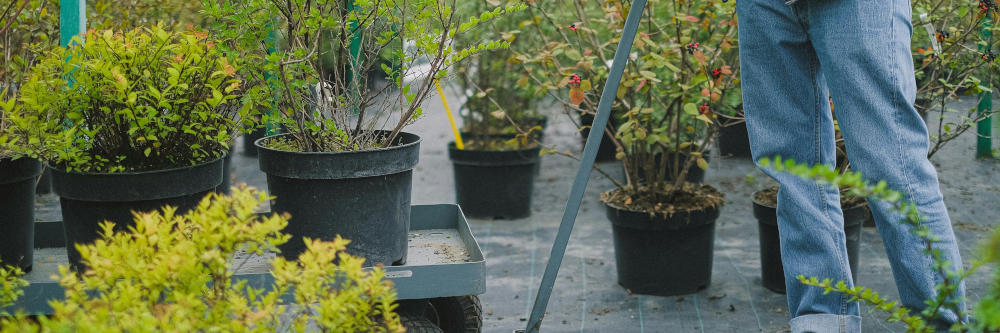

ACTIONS SUMMARY PLUS SUCCESS METRICS
GIS... topography... automation... work with rather than against ecological processes to nearly eliminate reliance on heavy
equipment and fossil fuel usage
Metrics of Success:
• Track total number of NBHS practitioners and monitor barriers to entry
• Survey NBHS worker satisfaction
• Monitor practitioner earnings
• Continuosly identify opportunities to reduce service costs, lower labor requirements, and optimize accessibility of practices

A Closer Look...
Home landscaping has long emphasized the domination of nature and creation of essentially sterile lawns.
NBHS brings the best of Nature back to your yard while creating skilled, dignified, stable, comfortable livelihoods
that do not rely on unpredictable external funding. We value life-long learning, knowledge sharing, selfless service, and fun.
Our deep understanding of ecological processes, GIS analysis, and field-proven techniques radically minimize costs and carbon
emissions and nearly eliminate reliance on heavy equipment and fossil fuels. In fact, a motivated individual can embark
on a satisfying career with only a bicycle or bus fare and a few hand tools. Some may choose to specialize in growing food,
whereas others become conventional landscapers that incorporate NBHS concepts, and others yet pursue entirely unrelated careers.
One way or another, people who work with NBHS will become more effective land stewards wherever they live and whatever they
ultimately do for a living.
With an increasingly
complex external funding environment, the ability to generate nature-based livelihoods relies only on the initiative of our clients.
Computers are great and all, but Nature has been efficiently automating processes (e.g. photosynthesis) for billions of years.
For example, using GIS and field-based methods to understand a property's topography can greatly
reduce or even eliminate earth-moving (digging). This low-disturbance approach not only saves energy and conserves soil but also
substantially reduces the financial barriers required for aspiring professionals to enter this line of work. Deep ecological
understanding combined with ergonomic labor practices ensures that our specialists stay healthy, happy, efficient, and actively
learning throughout their careers. Critically, be it as a small businesses owner or as an employee, NBHS livelihoods will never be
outsourced or replaced by robots.